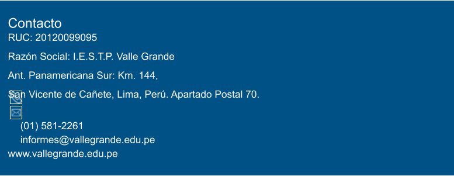
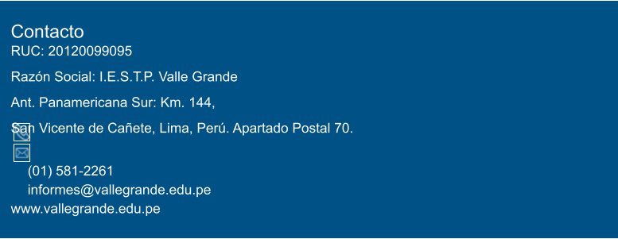

Quienes somos
Valle Grande es actualmente un Centro de Educación Superior constituido por la Promotora de Obras Sociales y de Instrucción Popular (PROSIP) el 25 de febrero de 1965, reconocido por el Ministerio de Agricultura mediante Resolución Directoral N° 04383-AG-DGAG del 2 de junio de 1983 y por el Ministerio de Educación mediante Resolución Ministerial N°0751-92-ED.
Desarrollo historico

Han transcurrido casi 50 años de trabajo y continuamos con el mismo deseo, seguir contribuyendo con el bienestar de las familias de Cañete y Yauyos.
Misión y visión
Misión
Formar personas en el ámbito técnico profesional, considerando el sentido trascendente del hombre, desarrollando en ellos competencias, que faciliten su inserción laboral, contribuyendo de esta manera al desarrollo del país.
Visión
Ser una institución referente de excelencia de la educación técnico profesional del Perú, asociada al sector productivo.
Organigrama
Visita nuestro canal de youtube 
